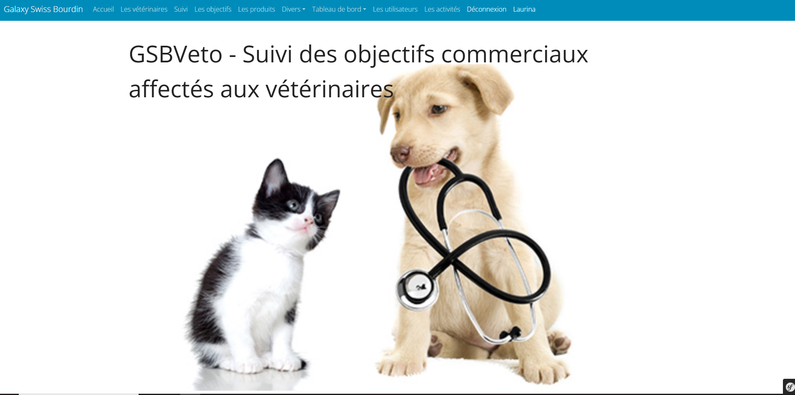
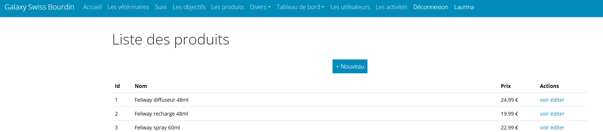
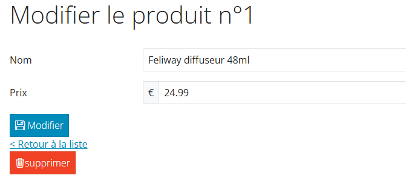
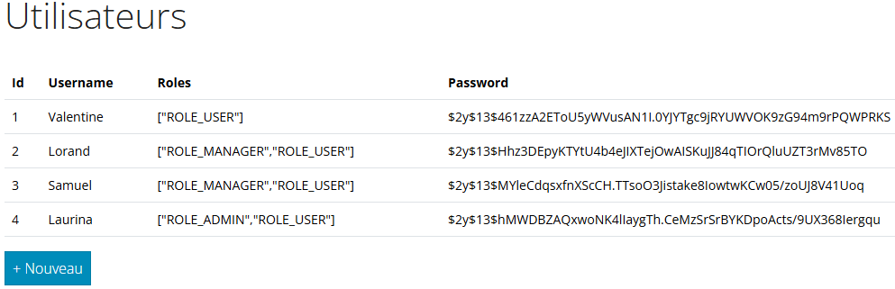
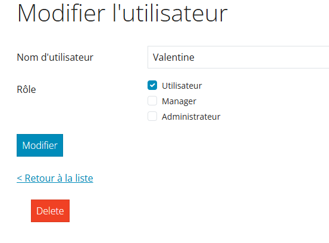
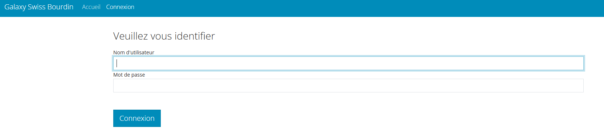

GSB Veto

Language utilisé: PHP, SQL (Doctrine Migrations)
Architecture applicative: MVC (Contrôleur de vue de modèle)
Environnement technologie: Visual Studio Code, Symfony.
Gestion de projet: Projet individuel
Contexte
Il s'agit de développer une application permettant d’améliorer la
promotion des produits vétérinaires l'entreprise fictive Galaxy
Swiss Bourdin (GSB).
GSB a mis en place un système de gestion des relations avec les
vétérinaires.
Le cahier des charges disponible
ici.
Compétences acquises
Gérer le patrimoine informatique
✅ Recenser et identifier les ressources numériques
✅ Mettre en place et vérifier les niveaux d’habilitation associés à un service
✅ Vérifier le respect des règles d’utilisation des ressources numériques
Travailler en mode projet
✅ Analyser les objectifs et les modalités d’organisation d’un projet
✅ Planifier les activités
✅ Évaluer les indicateurs de suivi d’un projet et analyser les écarts
Organiser son développement professionnel
✅ Mettre en place son environnement d’apprentissage personnel
Projet réalisé
Page d'accueil
Liste des produits

Liste des produits (Admin)
Modification d'un produit
Dashboard Admin
Modification d'un administrateur
Page d'authentification
